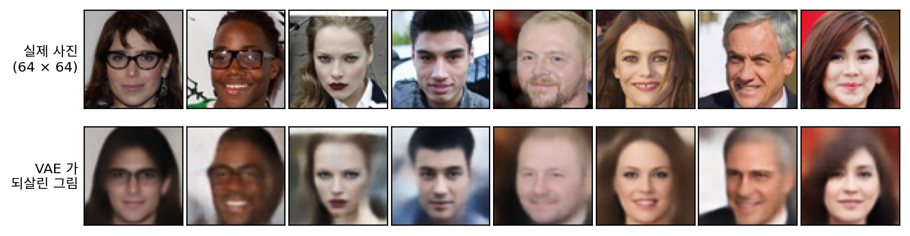
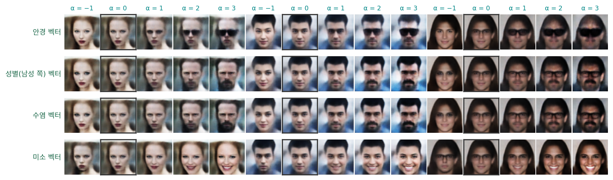
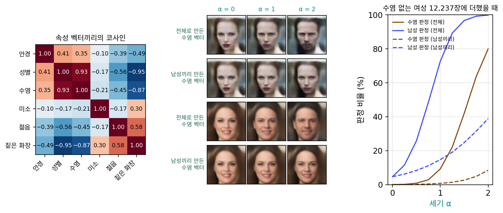

속성 벡터: 다 배운 잠재 공간에서 방향 찾기
조건부 VAE 는 조건을 처음부터 모델에 넣었다. 학습 그림마다 라벨이 붙어 있어야 했고, 어떤 조건을 받을지도 학습 전에 정해야 했다. 학습이 끝난 뒤에 「안경도 바꿔 보고 싶다」는 생각이 들면 모델을 처음부터 다시 학습해야 한다.
다른 길은 없을까? 조건 없는 VAE 도 학습하면서 그림들을 잠재 공간 곳곳에 늘어놓았다. 손글씨 지도에서 같은 숫자끼리 무리를 이룬 것처럼, 얼굴을 학습한 VAE 라면 안경 쓴 얼굴들도 잠재 공간의 어느 한쪽에 모여 있지 않을까? 그렇다면 그쪽으로 가는 방향을 찾아 아무 얼굴의 잠재 변수에 더해 주기만 하면 안경이 씌워질지도 모른다. 이번에는 조건을 모델에 넣지 않고, 다 배운 잠재 공간 안에서 방향을 찾아본다. 잠재 변수 2칸짜리 손글씨 지도는 이런 실험을 하기에 너무 좁으니, 실제 얼굴 사진으로 해 본다.
역사: 「왕 − 남자 + 여자」에서 얼굴로
잠재 공간에서 덧셈·뺄셈을 하는 생각은 낱말에서 먼저 나왔다. 2013년 미콜로프(Tomas Mikolov)와 동료들이 학습한 단어 벡터에서는 「왕」의 벡터 − 「남자」의 벡터 + 「여자」의 벡터에 가장 가까운 단어가 「여왕」이었다.
2015년 래드퍼드(Alec Radford), 메츠(Luke Metz), 친탈라(Soumith Chintala)는 잡음을 받아 얼굴 그림을 그리는 생성 모델(적대적 생성 신경망, 이 책에서는 다루지 않는다)의 입력 공간에서 같은 셈이 되는지 시험했다. 「안경 쓴 남자 − 안경 안 쓴 남자 + 안경 안 쓴 여자」를 넣자 안경 쓴 여자가 나왔고, 「웃는 여자 − 무표정한 여자 + 무표정한 남자」는 웃는 남자가 되었다. 이들이 적은 시행착오가 있다. 그림 한 장씩으로 셈하면 결과가 들쭉날쭉해서, 개념마다 그림 세 장의 입력 벡터를 평균 낸 뒤에 셈해야 결과가 안정되었다. 같은 셈을 픽셀에서 하면 얼굴이 겹쳐 보이는 흐린 그림만 나왔다.
그해 말 라르센(Anders Boesen Lindbo Larsen)과 동료들은 셈에 쓸 벡터를 라벨로 뽑았다. 얼굴 사진에 붙은 「안경」 같은 라벨로 그림을 둘로 나누고, 인코더가 내놓은 잠재 변수의 평균끼리 뺀 것이다. 그들도 이 방법이 「짙은 화장」과 「립스틱」처럼 함께 붙는 라벨에는 문제가 있다고 적었고, 남자 쪽으로 가는 벡터에 콧수염이 따라 나온다는 것을 그림으로 보였다. 이듬해 화이트(Tom White)는 사진 속 사람의 미소를 더하고 빼 주는 온라인 서비스를 열었다가 같은 문제를 겪었다. 미소를 빼면 얼굴이 남자처럼 바뀌었다. 데이터에서 여자가 남자보다 더 자주 웃고 있었기 때문이다.
얼굴 사진으로 VAE 학습하기
데이터는 2015년 홍콩중문대의 류(Ziwei Liu)와 동료들이 모은 CelebA 다. 유명인 10,177명의 얼굴 사진 202,599장에, 사진마다 「안경」「남성」「수염 없음」「웃음」 같은 예/아니오 라벨 40개가 붙어 있다. 얼굴은 두 눈이 같은 자리에 오도록 맞춰 잘라 두었다. 이 데이터는 비상업 연구 목적으로만 쓸 수 있다. 이 절의 사진과 그림은 그 조건 안에서 싣는다. 사진을 가운데 148 × 148 칸으로 잘라 64 × 64 로 줄였고, 학습에는 162,770장, 확인에는 따로 떼어 둔 시험 사진 19,962장을 썼다.
모델은 손글씨에서 쓴 VAE 와 같은 구조다. 인코더가 사진 한 장을 받아 구름의 중심 μφ와 크기를 내놓고, 디코더가 잠재 변수 z에서 사진을 되살린다. 잠재 변수는 64칸이다. 다른 점은 둘이다. 하나는 디코더가 칸마다 잉크 동전 대신 밝기의 평균을 내놓는 가우시안 디코더라 재구성 항이 제곱 오차가 된다는 것이다(표준편차 0.1). 다른 하나는 64 × 64 × 3 = 12,288칸을 MLP 처럼 한 줄로 늘어놓지 않고, 그림을 다루려고 만든 부품을 쌓았다는 것이다. 이웃한 칸들을 묶어 읽는 부품인데, 그 속은 아직 열지 않고 빌려 쓴다. 매개변수는 217만 개이고, 학습 사진을 30번 돌리는 데 GPU 하나로 5분쯤 걸렸다.

되살린 얼굴은 누구인지 알아볼 만하지만 흐리다. 시험 사진 2,000장에서 가는 무늬의 세기(칸마다 이웃 네 칸과의 밝기 차를 모은 값의 분산)는 원래 사진의 14.5%만 남았다. 손글씨에서 본 흐림이 얼굴에서도 그대로다.
라벨의 차이로 방향을 뽑는다
이제 라벨을 쓴다. 학습 사진 가운데 「안경」 라벨이 붙은 10,521장과 붙지 않은 152,249장을 각각 인코더에 넣어 구름의 중심 μφ를 모으고, 두 무리의 평균을 뺀다. 이것이 안경 쪽으로 가는 방향이다.
이렇게 뽑은 벡터를 속성 벡터 (attribute vector)라 한다. 학습은 이미 끝났다. 라벨은 평균 두 개를 낼 때 한 번 쓰이고, 모델의 매개변수는 하나도 바뀌지 않는다. 안경 벡터의 길이는 2.03이다. 학습 사진의 μφ는 칸마다 표준편차가 약 1이니, 안경을 쓰고 안 쓰고의 차이는 잠재 공간에서 칸 두 개를 표준편차만큼 옮긴 정도의 거리다. 같은 방법으로 성별(「남성」 라벨), 수염(「수염 없음」 라벨의 반대), 미소(「웃음」 라벨) 벡터를 만들었다.

미소 벡터는 깔끔하게 듣는다. 세기를 올리면 입꼬리가 올라가고 이가 보이고, 빼면 무표정해진다. 안경 벡터는 α = 1 에서 얇은 테가 비치다가 α = 2 부터 짙은 선글라스가 된다. CelebA 의 「안경」 라벨에는 선글라스도 들어 있고, 무작위로 본 안경 쓴 여성 사진 열 장 가운데 일곱 장이 선글라스였다. 픽셀로는 눈가를 통째로 검게 덮는 선글라스가 얇은 테보다 훨씬 큰 차이라, 평균의 차도 그쪽으로 끌려간다. 그리고 잘 보면 이름에 없는 것까지 바뀌는 벡터가 있다. 무엇이 왜 함께 바뀌는지는 아래 문제에서 숫자로 따진다.
두 벡터가 얼마나 같은 쪽을 가리키는지는 길이를 뺀 각도, 곧 코사인 cos = (v1 · v2) / (‖v1‖ ‖v2‖)로 잰다. 1이면 같은 쪽, 0이면 직각, −1이면 반대쪽이다. 서로 아무 상관 없는 64칸 방향 둘을 무작위로 뽑으면 코사인의 크기는 평균 0.10, 크게 나와도(위 5%) 0.24 안쪽이다.
ML에서: 학습이 끝난 모델을 고쳐 쓰기
속성 벡터는 모델을 다시 학습하지 않고 이미 있는 생성 모델의 출력을 손보는 방법이다. 화이트의 미소 서비스처럼, 학습한 사람과 쓰는 사람이 달라도 라벨 붙은 사진 몇 묶음만 있으면 새 손잡이를 달 수 있다. 다만 손잡이가 정말 「그 속성 하나」만 움직이는지는 따로 확인해야 한다. 사람 눈 대신 그것을 재려고, 이 절에서는 실제 사진으로 따로 학습한 판정용 분류기(시험 사진에서 안경 99.5%, 남성 97.6%, 수염 95.6%, 웃음 92.6%를 맞힘)로 바꾼 그림을 판정했다.
문제 3. 안경 쓴 사람은 키가 크다?
어느 회사 직원 1,000명의 키를 조사했다. 남성 평균은 174cm, 여성 평균은 161cm이고, 남녀 모두 안경을 쓴 사람과 안 쓴 사람의 키 분포는 같다. 그런데 안경 쓴 직원은 80%가 남성이고, 안경 안 쓴 직원은 40%가 남성이다. (가) 「안경 쓴 직원의 평균 키 − 안경 안 쓴 직원의 평균 키」는 얼마인가? (나) 이 차를 「안경의 효과」라 할 수 있는가? (다) 안경 자체와 상관있는 차이만 보려면 어떻게 견주어야 하는가?

계산은 쉬워요. 안경 쓴 쪽이 0.8 × 174 + 0.2 × 161 = 171.4, 안 쓴 쪽이 0.4 × 174 + 0.6 × 161 = 166.2. 안경 쓴 사람이 5.2cm 커요.

그런데 남자끼리 보면 안경을 쓰든 안 쓰든 174고, 여자끼리도 161이야. 안경이 키를 바꾼 데는 한 군데도 없어.

그럼 5.2cm 는 어디서 왔을까요?

남녀 비율이요. 안경 쓴 무리에 남자가 0.8 − 0.4 = 0.4 만큼 더 많고, 남녀 키 차가 13cm니까 0.4 × 13 = 5.2. 평균의 차가 통째로 성별의 차예요.

그러니까 (다)는 같은 성별 안에서 안경 쓴 사람과 안 쓴 사람을 견주는 거네. 남자끼리 차, 여자끼리 차를 각각 내면 둘 다 0이야.
조교님이 「과제 일찍 낸 사람이 점수가 높다」고 했는데, 알고 보니 일찍 낸 사람이 거의 4학년이었던 거랑 같네요.
문제 4. 수염 벡터 속의 남성
학습 사진에서 수염 있는 사진 26,991장 가운데 남성은 99.6%이고, 수염 있는 여성 사진은 117장뿐이다. 속성 벡터의 길이와 코사인은 아래와 같다(무관한 64칸 방향 둘의 코사인 크기는 평균 0.10).
길이 남성 벡터와의 코사인 수염 벡터(전체 사진으로) 1.78 0.935 수염 벡터(남성 사진끼리만) 0.97 0.44 안경 벡터(전체 사진으로) 2.03 0.41 (가) 코사인 0.935 는 무엇을 말하는가? (나) 수염 벡터에서 남성 벡터 방향의 성분을 빼면(사영을 빼면) 남는 길이는 얼마인가? (다) 아래 그림은 수염 없는 여성 사진에 두 가지 수염 벡터를 더한 결과다. 무엇이 예상과 다른가? 그 까닭은 무엇인가?

위젯 2 의 「문제 4 불러오기」를 누르면 여성 얼굴에 수염 벡터를 두 배로 더한 그림과 판정 비율을 볼 수 있다.
(가)는 수염 벡터가 남성 벡터랑 거의 같은 쪽이라는 거죠. 무관하면 0.1 둘레인데 0.935면 거의 겹쳐요. 그래서 수염 벡터를 더하면 얼굴이 남자가 돼요. 그래프에서도 α = 1 에서 남성 판정이 72.6%인데 수염 판정은 9.3%예요. 수염보다 남자가 먼저 와요.

왜 그렇게 됐을까요? 방금 키 문제랑 견주어 보면요.

아, 똑같아요! 수염 있는 무리는 99.6%가 남자고 수염 없는 무리는 대부분 여자니까, 평균의 차에 성별의 차가 통째로 들어가요. 안경 키 문제의 5.2cm 가 여기선 남성 쪽 성분이에요.
(나)는 내가 할게. 남성 방향 단위벡터 쪽 성분은 1.78 × 0.935 이고, 남는 직각 성분의 길이는 1.78 × √(1 − 0.935²) ≈ 0.63이야. 수염 벡터 길이의 3분의 1 남짓만 성별과 상관없는 부분이네.
그럼 그 남은 부분, 혹은 남성 사진끼리만 견준 수염 벡터를 여성 얼굴에 더하면 수염만 나겠네요?

그래야 하는데… 그림을 보면 남성끼리 만든 벡터는 α = 2 에서도 얼굴이 거의 그대로예요. 수염 판정 8.4%, 남성 판정 38.8%. 성별이 섞인 건 줄었는데 수염도 같이 사라졌어요. 남성 성분만 사영으로 빼낸 벡터는 더 심해요. 스크립트로 해 보니까 α = 2 에서 수염 0.4%, 남성 7.3%로, 거의 아무것도 안 바뀌어요.

수염 있는 여자 사진이 117장뿐이잖아. 모델은 여자 얼굴 자리 둘레에서 수염을 한 번도 제대로 본 적이 없어. 남자들 사이에서 찾은 「수염 방향」이 여자 얼굴 자리에서도 수염 방향이라는 보장은 어디에도 없지. 평균의 차는 데이터가 실제로 있는 곳에서만 뜻이 있어.

그래요. 키 문제에서는 같은 성별 안에서 견주면 깔끔하게 0이 나왔어요. 남자 안에도 안경 쓴 사람과 안 쓴 사람이 충분히 있고, 여자 안에도 있었으니까요. 수염은 여자 안에 거의 없어요. 같은 무리 안에서 견주는 방법은 그 무리 안에 두 경우가 다 있어야 써먹을 수 있어요. 미소는 달라요. 웃는 사진이 남녀 모두에 많으니까, 성별마다 차를 내서 평균하면 남성 벡터와의 코사인이 −0.17에서 −0.03으로 줄어요. 화이트가 미소 서비스에서 한 일이 이거예요.
확률론 시간에 조건부 기댓값은 조건의 확률이 0인 곳에서는 정해지지 않는다고 배웠는데, 그거네. 여자이면서 수염 있는 사진이 거의 없으니 「여자일 때 수염의 효과」는 데이터가 정해 주지 않아.
문제 5. 조건을 넣는 길과 방향을 찾는 길
같은 몸통·잠재 변수 64칸으로, 안경·남성·수염·웃음 네 라벨을 인코더 끝과 디코더 입력에 이어 붙인 조건부 VAE 도 학습했다(조건이 없는 쪽과 같은 손실, 같은 학습 횟수). 안경 없는 여성 시험 사진 11,930장에 안경을 씌워 본다. 판정용 분류기의 판정 비율(%)은 아래와 같다.
안경 판정 남성 판정 속성 벡터: 바꾸기 전 → 안경 벡터 × 2 0.0 → 73.9 3.7 → 84.1 조건부 VAE: 제 라벨로 인코딩한 뒤 디코더에 준 안경 조건만 0 → 1 0.0 → 0.5 0.8 → 4.2 조건부 VAE: 사전분포에서 뽑은 잠재 변수 4,000개, 안경 조건만 0 → 1 0.0 → 5.2 안경 라벨이 붙은 학습 사진을 양쪽에서 n장씩만 골라 안경 벡터를 만들면, 전체로 만든 벡터와의 코사인은 n = 20 에서 0.62, 100 에서 0.87, 500 에서 0.97 이다(20번 평균). (가) 두 길은 각각 라벨이 언제, 얼마나 필요한가? (나) 조건부 VAE 는 안경 조건을 받았는데도 왜 안경을 거의 씌우지 못했을까? (다) 두 길 가운데 어느 쪽이 속성끼리 덜 얽히는가?
위젯 2 의 「문제 5 불러오기」를 누르면 여성 얼굴에 안경 벡터를 두 배로 더한 그림을 볼 수 있다.
이거 진짜 재밌어요. 미소 두 칸, 안경 한 칸, 수염은 빼고… 슬라이더 네 개로 얼굴을 마음대로 조립하잖아요. 속성 라벨이 40개니까 손잡이를 40개 달 수 있고요. 원하는 얼굴을 주문해서 받는 거예요!
…실물이 바로 옆에 있는데, 상상한 얼굴을 만들어 내는 게 그렇게 좋아?
응? 진짜 사진은 슬라이더가 없잖아. 바꿀 수가 없는데.
…그렇지. 바꿀 수가 없지.

손잡이를 마음대로 달 수 있는지부터 따져 봐요. (가)부터요. 조건부 VAE 에는 라벨이 언제 필요했어요?
학습할 때 사진마다 전부요. 16만 장 모두에 네 라벨이 붙어 있어야 했고, 다섯째 속성을 바꾸고 싶으면 처음부터 다시 학습해야 해요. 속성 벡터는 학습이 끝난 뒤에, 그것도 양쪽 500장쯤이면 전체로 만든 것과 코사인 0.97이에요. 20장씩이면 0.62라 좀 불안하고요.
래드퍼드 팀이 사진 한 장씩으로는 들쭉날쭉하고 세 장 평균을 내야 안정됐다는 게 이거구나. 평균 낼 사진이 적으면 그 사진들만의 우연한 특징이 같이 들어가.
이제 (나)예요. 조건부 VAE 의 표가 이상하지 않아요? 안경 조건을 1로 줬는데 안경이 0.5%밖에 안 씌워졌어요.

학습이 덜 됐나 했는데, 마지막 손실이 4,471로 조건 없는 VAE(4,499)와 거의 같아요. 디코더가 조건을 안 보는 것 같아요.

인코더는 사진을 통째로 보잖아. 안경을 썼는지는 사진에 다 있으니까 잠재 변수 64칸에 이미 들어가. 디코더 입장에서는 잠재 변수만 봐도 안경을 그릴 수 있으니까 조건 칸을 굳이 볼 필요가 없었던 거 아닐까.
짐작을 숫자로 확인해 볼까요? 조건부 VAE 의 잠재 변수로도 안경 벡터를 만들어 보면요.
해 봤어요. 길이가 1.55예요. 조건 없는 VAE 의 2.03보다 짧긴 한데, 잠재 변수에 안경이 여전히 크게 들어 있어요. 조건으로 안경을 알려 줘도, 잠재 변수가 「안경 없음」이라고 하니까 디코더는 잠재 변수를 따른 거예요. 사전분포에서 뽑은 잠재 변수에서도 5.2%뿐이고요.
그래요. 흐림 절에서 조건은 사람이 값을 정해 준 잠재 변수를 하나 더 둔 셈이라고 했죠. 같은 정보가 두 군데 들어갈 수 있으면 모델은 어느 쪽을 쓸지 스스로 골라요. 조건을 넣는 길이 잘 들으려면 잠재 변수가 그 정보를 갖지 못하게 하는 장치가 따로 필요해요. 이 실험은 그런 장치 없이 그대로 했고요. (다)는요?
속성 벡터는 얽혀. 안경 벡터를 두 배 더하니까 남성 판정이 3.7%에서 84.1%가 됐어. 안경 쓴 사진의 79.5%가 남자니까, 수염 문제랑 같은 일이 안경에서도 일어난 거야. 그러면 안경 쓴 여자 얼굴은…
위젯에서 「안경 쓴 여성」을 고르면 되살린 그림부터 분류기가 남성 96%로 봐요. 이 분류기, 안경 쓴 여자를 잘 못 보네요.
…분류기가 그런 거야, 분류기가.
조건부 VAE 는 라벨 넷을 따로따로 받으니까, 적어도 「안경 = 1, 남성 = 0」을 함께 주문할 수는 있어요. 그런데 데이터에 그 조합이 적으면 모델이 그 조합을 잘 배웠다는 보장은 없어요. 여성 + 수염 조합은 117장뿐이었죠. 조건을 넣는 길은 얽힘을 주문서에서 풀 수 있지만 데이터에 없는 조합까지 그려 주지는 않고, 방향을 찾는 길은 라벨이 적어도 되지만 데이터가 함께 붙여 놓은 것을 같이 끌고 와요. 두 길 모두 결국 데이터에 있는 것만큼만 알아요.
확률론 시간에 표본 상관과 인과를 혼동하지 말라던 거, 생성 모델에서는 그림으로 바로 보이네.